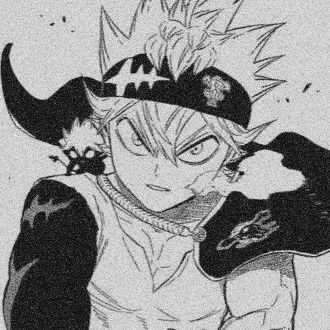
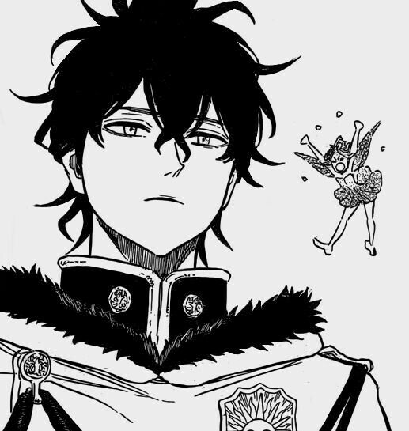
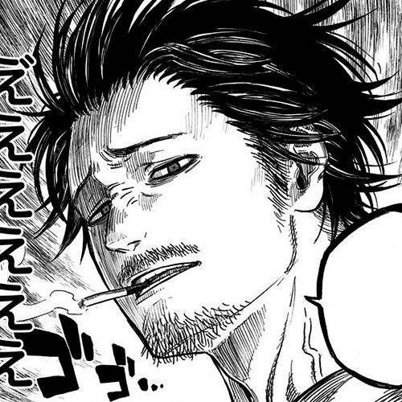
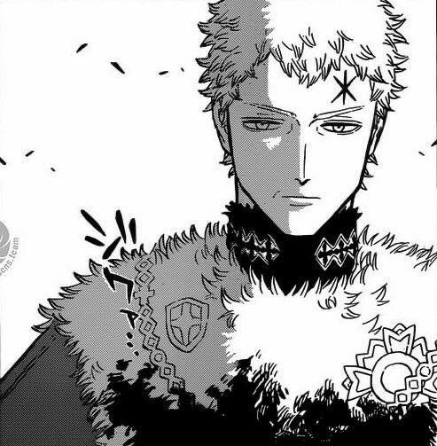
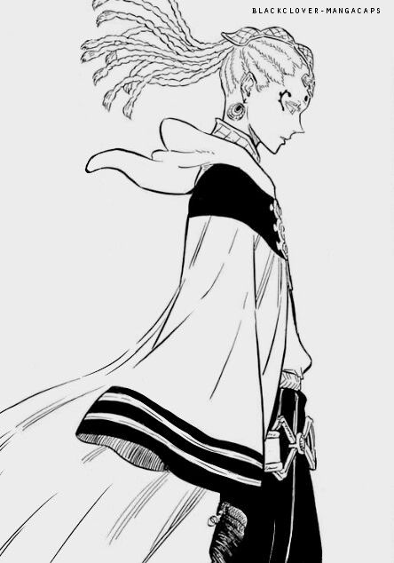

-
Asta
Descrição
ele é um órfão abandonado em frente uma igreja, na cidade de Hage, junto com seu rival Yuno, que compartilha o mesmo sonho de se tornar o Rei Mago com ele, apesar de não ter magia atualmente Asta está nos Cavaleiros da Magia, seu pelotão é os Touros Negros.
-
Yuno
Descrição
Yuno é um personagem muito importante para a obra, sendo extremamente assíduo no decorrer do anime. O mesmo tem características físicas notáveis e inconfundíveis, como seus olhos cor de âmbar, seu cabelo de coloração preta e sua estatura média. O personagem foi deixado em uma igreja por seus pais, quando o mesmo ainda era pequeno.
-
Yami sukehiro
Descrição
Como o capitão do esquadrão Touros Negros, Yami usa uma bandeira negra com a insígnia do esquadrão. Ele a usa sobre o ombro direito e a prende por duas cordas no ombro esquerdo. A bandeira também tem bordas esfarrapadas, parecendo ter sido roubado de uma bandeira maior.
-
William vangence

Descrição
Capitão do ""Alvorecer Dourado"", que é conhecido por ser o melhor esquadrão de todos. Apesar de passar uma impressão misteriosa, ele conquistou a confianãa de todos em seu esquadrão e é um forte candidato a se tornar o próximo Rei Mago.
-
Julios novachrono
Descrição
Julius é conhecido por ter uma obsessão por magia, pois ele gosta de explorar o reino em busca de magia que ele nunca viu antes. Geralmente, sua personalidade infantil surge quando ele encontra um novo tipo de magia e fica animado para vê-la em ação.
-
licht
Descrição
Licht foi um elfo alto e esbelto, de pele branca, traços faciais afilados e olhos dourados. Seu longo cabelo branco, geralmente, fica puxado para trás em uma única trança.Seu corpo artificial tem dois conjuntos de tatuagens: em suas bochechas, uma linha vertical sob cada olho e no meio de sua testa, quatro pontos formando um diamante cercado por linhas curvas